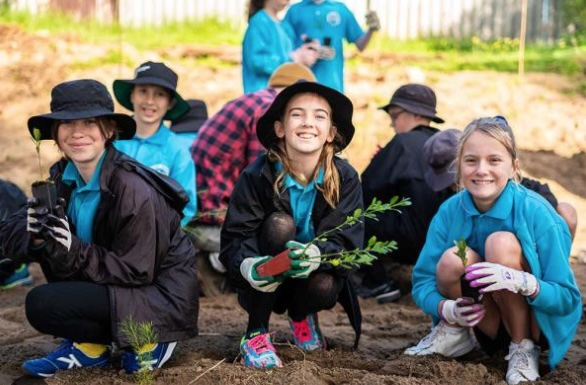
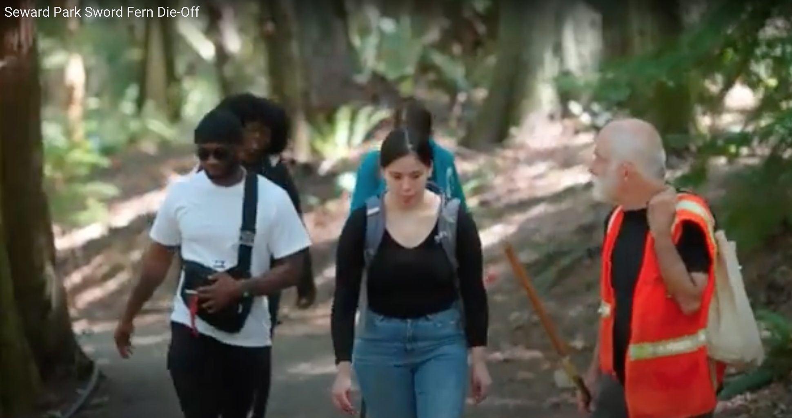

A Pocket Forest for Graham Hill Elementary?

Imagine a plot of ground, just ten feet on a side, in a little-used
part of the Graham Hill school grounds. This could be a Miyawaki
Pocket Forest, a living laboratory created by and for the students.
We prepare the soil. Then we plant native seedling
trees, shrubs and understory plants. Children are actively engaged
throughout: digging, planting, watering, weeding, tracking
and observing. They grow their own dyamic natural laboratory.
After two or three years the forest cares for itself. It becomes
substantal and tall after five years, then a mature forest after just
thirty years. Early on it already teems with bugs, birds, and a
healthy underground ecosystem, deeply instructive for any who care
to look. One will see leaves tracking sunlight and capturing carbon.
Some competition will be on display, and lots of
symbiosis - viewed through the lens of art, or with the tools of science.
Tracking the plants and the forest community, children can learn of the
green world, come to see into the biology and ecology of
the plants they put in as seedlings.
Teachers, staff and parents, already very busy, know the
students and their needs. Would they welcome this? Does it fit
with the curriculum? Any possible project would have to be fully
responsive to them, seeking out and then following their guidance.
What is a Miyawaki Pocket Forest?
The Miyawaki Method is one of the most effective tree planting
methods for creating forest cover quickly on degraded land that has
been used for other purposes such as agriculture or
construction. It is effective because it is based on natural
reforestation principles, i.e. using trees native to the area and
replicating natural forest regeneration processes. It has some
significant benefits over more traditional forestry methods when
used in smaller afforestation projects and is particularly
effective in the urban environment. The trees planted by this
method grow much faster, jump starting the forest creation process
and capturing more carbon. Higher biodiversity has been recorded in
Miyawaki forests than in neighbouring woodland, so it’s an ideal
method for creating diverse forest ecosystems quickly. Within the
context of the current climate change emergency and stark warnings
about the global loss of biodiversity, being able to create
diverse, healthy forests quickly could prove vital to meeting
international targets and tackling these issues. [source:
Dr. Simone Weber]
How Big? How Small?
- May be as small as 10 feet square.
- At 30 feet square (900 square feet), 250 saplings can be planted
- Might be wise to start small, learn along the way.
Effort and Likely Costs
- Some significant labor goes into preparing the ground and dense planting
of native species. Parent and community volunteers working with
students: many hands make for light work.
- For two or three years, summer watering and weeding is needed.
- After that phase, the small forest is mostly
self-maintaining - just what you'd expect of a native forest.
- Seattle Parks and the King County Conservation District
annually provide native plants, and may contribute to a school-based
Miyawaki forest.
- If Graham Elementary staff, parents and students are
interested in this project, Paul will pursue these
sources of plants, as well as fund-raising possibilities as
needed. The goal is to accomplish the project at no cost to the school.
Existing Seattle Miyawaki Forests
Proposed By Forest Steward Paul Shannon
Paul has been the Green Seattle Parternship (GSP) forest steward for
Seward Park's 120 acre old-growth forest for more than 20 years.

In that role he manages monthly forest restoration work parties.
He has led research efforts to understand Seward's (and the
region's) sword fern die-off. He is a semi-retired
bioinformatics software engineer, lives nearby, and delights
in watching the morning procession of children and parents going to
school at Graham Hill.
Watch an 18-minute documentary
film on the fern die-off and our
community's response, and the tenacity with which Paul and his
collaborators work. 3-minute version of the film
here.
Paul has had some success in raising funds for research at Seward.
His ties with Seattle Parks plant ecologists and UW faculty informs
his work with forest plants.